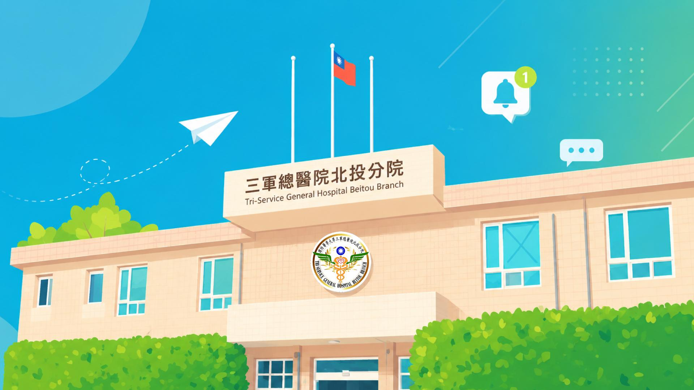
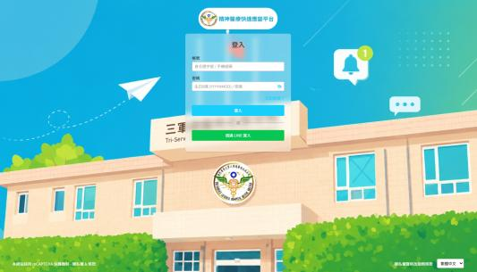
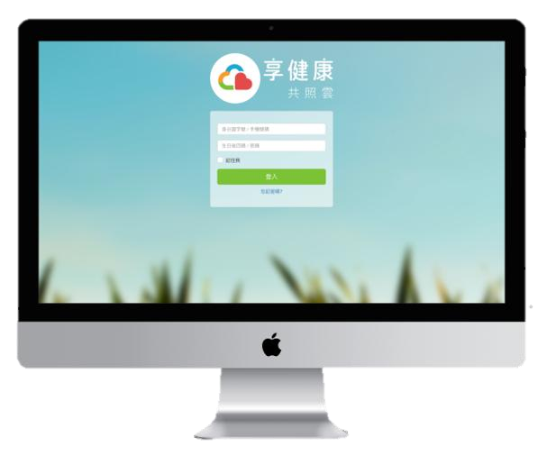
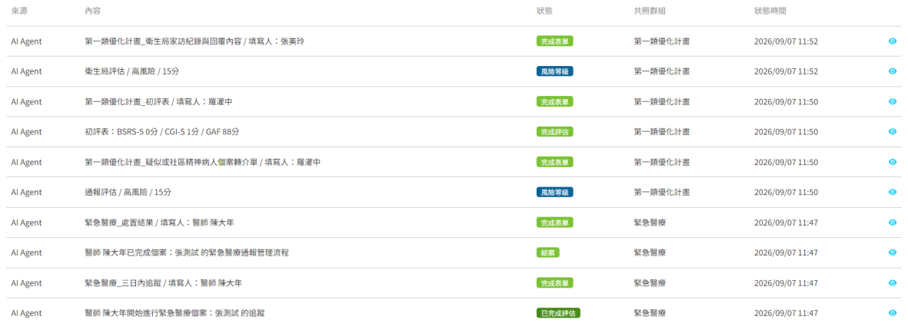
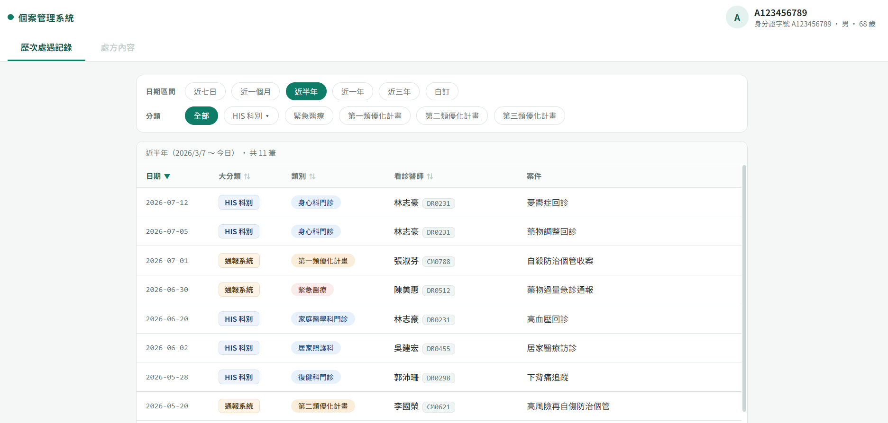
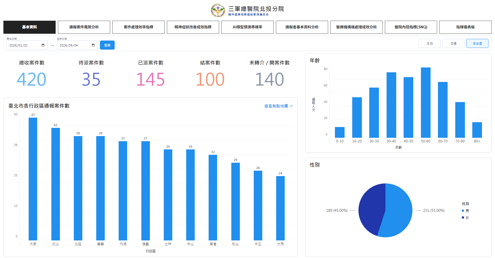

點擊任意處或按 Esc 關閉

平台簡介
以資訊數位化打破局處藩籬，提升應變效率
確保個案從通報、處置、追蹤的完全透明與安全


透明且自動化追蹤通報進度
有新的緊急醫療個案已被指派給您
個案姓名：王大明
您收到一則來自 心衛志工 陳小花的留言訊息

即時因應即持續追蹤
個案管理系統：HIS 與通報系統歷次處遇記錄整合

精神健康個案通報管理儀錶板 · 九大分析頁籤

以 100% 數位化及全程追蹤的系統，
強化臺北市緊急醫療應變量能，
建構強韌社會安全網。
精神醫療快速應變平台｜三軍總醫院北投分院